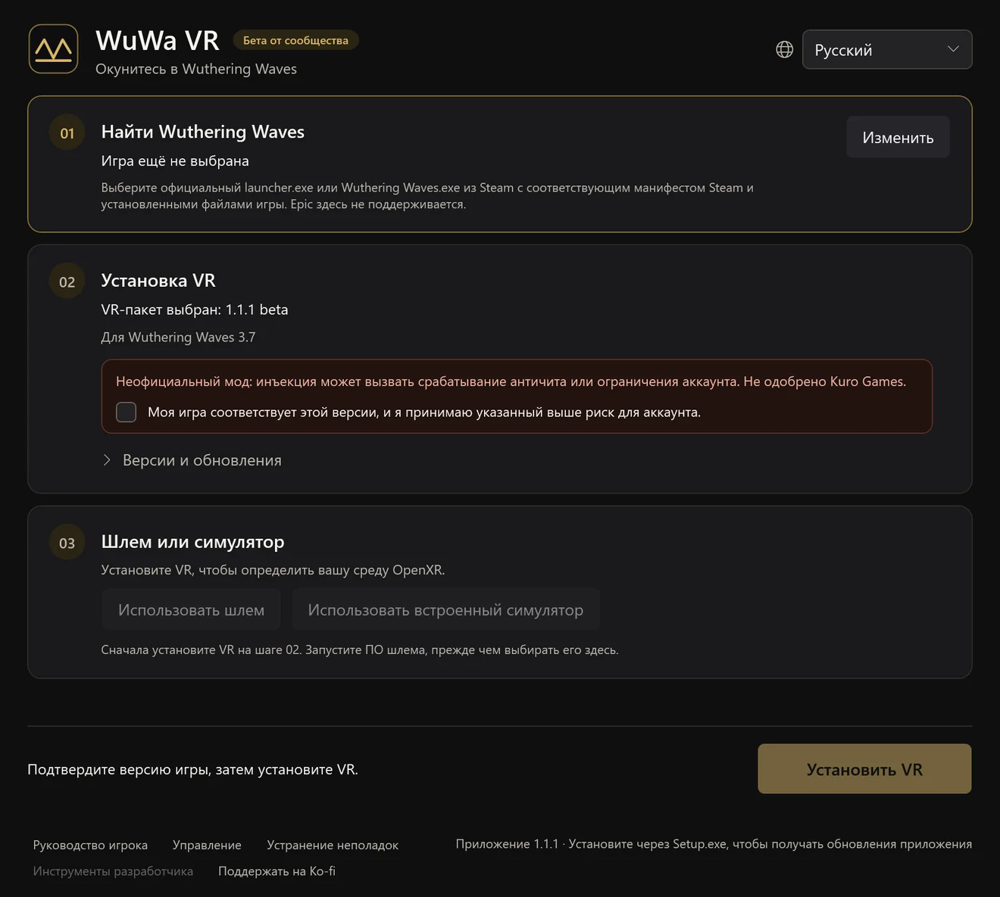
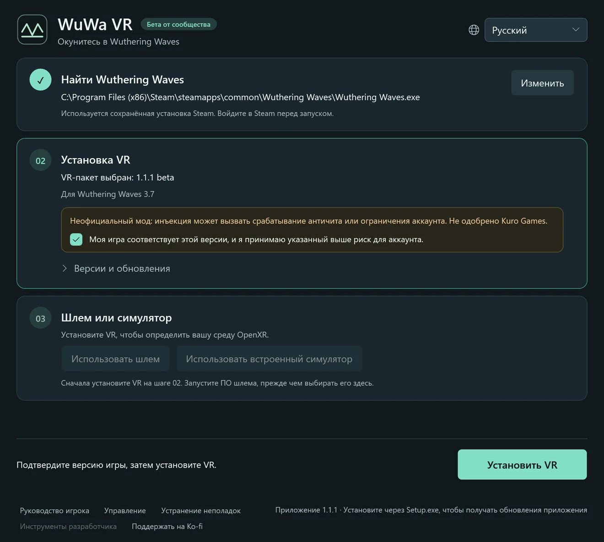
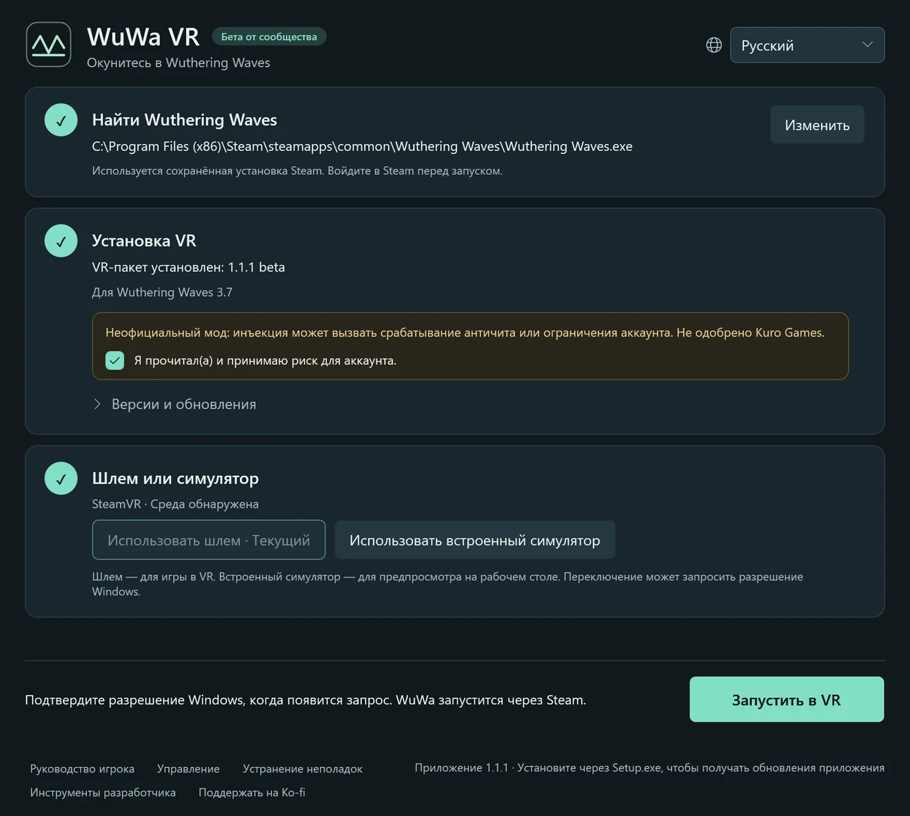

Бета от сообщества1.1.2 · Wuthering Waves 3.7
Окунитесь в Wuthering Waves
Бесплатный фанатский VR-мод для Windows. Гуляйте по Солярис-3 в натуральную величину: отслеживание головы, тело от первого лица и сочетания кнопок геймпада. Основан на UEVR от praydog.
Установите и сделайте три шага
Запустите WuWa-VR-Setup.exe и откройте WuWa VR — остальное подскажет лаунчер. При первой установке скачивается VR-мод; Python и другие инструменты не нужны.
Найти Wuthering Waves
Выберите игру из Steam или из официального лаунчера Kuro. Выбор сохраняется. Epic пока не поддерживается.
Установка VR
Прочитайте предупреждение о риске для аккаунта, подтвердите версию игры и установите. Обновления сохраняют ваши настройки и резервные копии.
Шлем или симулятор
Запустите программу шлема или выберите встроенный симулятор. Затем нажмите «Запустить в VR» и разрешите запрос Windows.






Настоящие экраны лаунчера, отрисованные приложением на русском. Ваши пути и среда выполнения будут другими.
В игре L3 + R3 открывает настройки UEVR. Параметры WuWa находятся в VR → WuWa Controls. Полное руководство по установке, обновлению и восстановлению (на английском)
Чтобы играть, а не только смотреть
Стерео-VR и отслеживание головы
Настоящая глубина в шлемах OpenXR. Меню и HUD остаются удобными, интерфейс можно перемещать, масштабировать или скрывать.
Всё под геймпад
Сочетания кнопок для Xbox и экспериментально для PlayStation, плюс шпаргалка внутри VR по L3 + Menu.
Тело от первого лица
Смотрите на руки и наряд персонажа со скрытой головой. Следование за анимацией по желанию, есть режим комфорта.
Свободные камеры
Свободная камера, дрон, самолёт и акро-режим для исследования и скриншотов. Экспериментально.
Окно 6DOF
Дополнительный оконный режим, который помещает игру в вашу комнату. На основе работы Elliott Tate.
Глаза видят одно и то же
Дальние деревья, объекты и непрямое освещение совпадают в обоих глазах, и мир выглядит цельной сценой.
От первого лица — вплоть до анимации ожидания
Посмотрите вниз — и вот ваш персонаж: руки, наряд и анимации ожидания в натуральную величину. Скройте кости головы, оставив тело, или включите следование за анимацией, чтобы вид был живее.
Записать свои ролики в высоком разрешении (на английском)Пошагово: вид от первого лица, чистый кадр и встроенная запись.Сочетания на геймпаде
Почти все сочетания — это L3 и ещё одна кнопка: зажмите левый стик, нажмите кнопку и отпустите всё. В VR сочетание L3 + Menu показывает тот же список в виде подсказок.

- LTПортал: вкл. / выкл.
- LBПереключить режим HUD / мыши
- ViewПервое лицо: вкл. / выкл.
- Крестовина ↓Первое лицо: анимация вкл./выкл.
- RTДиорама: вкл. / выкл. (10x)
- RBКамера игры / фиксированная
- MenuПоказать / скрыть подсказки
- Y/XПервое лицо / фикс.: высота
- BПоказать / скрыть интерфейс
- AЦентрировать вид / портал
- R3Открыть / закрыть настройки UEVR
Жесты
- R3×2Свободная камера: вкл. / выкл.
- L3×2Снимок экрана Windows
- LT+RT→L30.8 sСтереоэкран: вкл. / выкл. (удерживать 0,8 с)
- LT+RT→R3Моно-кинотеатр: вкл. / выкл. (без стереоглубины)
chronohaxx.github.io/wuwa-vr
Поддержка PlayStation экспериментальная.
Все сочетания
ОСНОВНОЕ
| L3+B | Показать / скрыть интерфейс |
|---|---|
| L3+A | Центрировать вид / портал |
| L3+R3 | Открыть / закрыть настройки UEVR |
| L3+Menu | Показать / скрыть подсказки |
| L3+View | Первое лицо: вкл. / выкл. |
| L3+RB | Камера игры / фиксированная |
| L3+LB | Переключить режим HUD / мыши |
| R3×2 | Свободная камера: вкл. / выкл. |
| L3×2 | Снимок экрана Windows |
КАМЕРЫ
| L3+LT | Портал: вкл. / выкл. |
|---|---|
| L3+RT | Диорама: вкл. / выкл. (10x) |
| LT+RT→L30.8 s | Стереоэкран: вкл. / выкл. (удерживать 0,8 с) |
| LT+RT→R3 | Моно-кинотеатр: вкл. / выкл. (без стереоглубины) |
| L3+Y/X | Первое лицо / фикс.: высота |
| LB+LT/RT | Фикс.: дальше / ближе |
| L3+крестовина вниз | Первое лицо: анимация вкл./выкл. |
| Удерживать RB | Полная скорость при включённом Polar walk |
| В свободной камере R3×2 | |
| Левый / правый стик | Своб. камера: движение / обзор |
| LT/LB | Своб. камера: вверх / вниз |
| RT / дважды RT | Своб. камера: ускорение / турбо |
МЕНЮ И HUD
| L3+крестовина влево / вправо | Подсказки: предыдущая / следующая страница |
|---|---|
| L3+крестовина вверх | Подсказки: автоматическая страница |
| LB+R3 | V один раз; удерживайте 0,8 с для колеса Tab |
| В режиме HUD / мыши L3+LB | |
| Левый стик | Переместить курсор |
| A/B | Нажать / назад |
| X+левый стик | Прокрутка |
| Крестовина | Переместить карту |
| LT/RT | HUD ближе / дальше |
| LB/RB | HUD вниз / вверх |
НАСТРОЙКИ UEVR
| В открытых настройках UEVR L3+R3 | |
|---|---|
| Крестовина / A / B | Выбор / включить / назад |
| LB/RB | Сменить страницу панели |
| Левый стик (RT отпущен) | Прокрутить активную панель |
| RT+левый / правый стик | Камера вперёд/вбок / высота |
| RT+крестовина влево / вправо | Выбрать страницу команд RT |
Вопросы
Какие шлемы поддерживаются?
WuWa VR использует OpenXR. Игра проверена на Quest Pro через SteamVR; другие шлемы OpenXR должны работать, но пока не проверены. Встроенный симулятор позволяет попробовать на обычном экране.
Steam, лаунчер Kuro или Epic?
Поддерживаются Steam и официальный лаунчер Kuro. Epic пока нет.
Могут ли ограничить аккаунт?
Да, это возможно. Мод внедряется в игру, и античит может его обнаружить. Kuro Games его не одобряла. Прочитайте предупреждение о риске перед установкой.
Windows предупреждает об установщике. Это нормально?
Установщик не подписан, поэтому SmartScreen может показать предупреждение. Скачивайте только из релиза проекта на GitHub и сверяйте контрольную сумму SHA-256. Никогда не отключайте антивирус и античит.
Как работают обновления?
Приложение само проверяет свои обновления и спрашивает перед перезапуском. VR-пакеты обновляются отдельно на шаге 02, и можно вернуться к ранее установленной версии.
Изменяются ли файлы игры?
Нет. Лаунчер не трогает файлы игры; VR-мод внедряется при запуске.
Как удалить?
В приложении выберите «Устранение неполадок → Подготовить удаление», затем удалите WuWa VR в Параметрах Windows → Приложения. Настройки, резервные копии и записи сохраняются, пока вы их не удалите.
Это бесплатно?
Да. Это бесплатный фанатский проект, а лаунчер — открытый код под лицензией MIT. Поддержка на Ko-fi добровольна и ничего не гарантирует.
Известные ограничения
- На некоторых ПК запуск через Steam всё ещё не работает; исправление тестируется. Лучше всего проверен запуск через официальный лаунчер Kuro.
- Загрузка некоторых сцен и диалогов может зависать, а за плоскими меню может двигаться фон.
- Обновление соотношения сторон HUD работает ненадёжно; часть освещения NPC, отражения и туман ещё требуют проверки.
- Автоматическое переключение на кат-сцены экспериментальное и по умолчанию выключено; с пререндеренным видео оно не проверялось.
Открытый код, проверяемые загрузки
Лаунчер для ПК — открытый код под лицензией MIT, а наши изменения мода опубликованы. К каждому релизу прилагаются соответствующий исходный код и контрольные суммы SHA-256.
Отчёты VirusTotal для этого релиза ещё не проверены. Мы не заявляем о чистой проверке или сертификации безопасности.
Помогите улучшить проект
Пишите на удобном языке. Подготовьте черновик, проверьте его на GitHub и отправьте сами. Сайт не публикует автоматически. Для отправки на GitHub нужен вход; для копирования черновика аккаунт не нужен.
Публичный репозиторий GitHub ещё не подключён. Можно скопировать черновик; он не отправлен.
Черновик — проверьте перед публикацией
Построено на труде сообщества
WuWa VR опирается на работу praydog и участников UEVR, mirudo2 (polar), SannpoKun, Indath, endlessfalls и Elliott Tate.